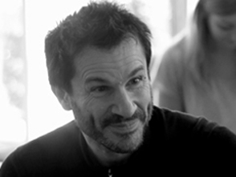

<!-- The content of our app -->
<region template="Body" contents="Body"><div><region data-id="content" default="HomePage" contents="HomePage"><div class="process-page" style="display: block;">

	<div class="process-heading container-fluid">
		<div class="row">
			<div class="col-md-2"></div>
			<div class="col-md-8">
				<h1>Agile</h1>
				<h2>We utilise Agile software development methods. Providing you with a functioning prototype quickly so you know what is effective sooner and can have continuous, reflective input throughout the process.</h2>
				
			</div>
		</div>
	</div>
	<div class="step-one container">
		<div class="row">
			<div class="col-md-1"></div>
			<div class="col-sm-6 col-md-5 text">
			<h1>Better Together</h1>
					<p>Coming from a variety of academic and industry backgrounds has given us the skills to create a team that best caters to a clients specification. We enjoy working together and even when split into separate teams we continue to consult one another. We start all our projects by writing tests, which we run after every new piece of work to ensure we’re always focused on building the product you want. Once everything passes, it’s launch time. This agile approach is the best way to provide you with quality assurance as well as the ability to quickly assess future changes. We’re happy writing tests using frameworks like Mocha and Phantom and libraries including Chai, Casper and SuperTest.</p>
			</div>
			<div class="col-xs-2"></div>
			<div class="col-xs-8 col-sm-6 col-md-5">
				
			</div>
		</div>
	</div>
	<div class="step-two container-fluid">
		<div class="row">
			<div class="col-md-8 col-md-offset-2">
					<h1>Access to Mentors</h1>
						<p class="two">We are a group of junior full stack developers and although we have come along way in the past few months we know that out experience is still limited. To counteract this we work with senior developers who act as mentors both checking code and advising us on best practices. At the same time we are all passsionate learners, willing to take the time to teach ourselves any new technology.</p>
			</div>
			<ul class="photo-grid">
				<li class="HWW">
					<figure>
						<div class="col-md-4 mentor-wrapper" >
							
							<figcaption><p class="mentName">Campbell Morgan</p></figcaption>
						</div>
					</figure>
				</li>
				<li class="HWW">
					<figure>
						<div class="col-md-4 mentor-wrapper">
							
							<figcaption><p class="mentName">Dan Sofer</p></figcaption>
						</div>
					</figure>
				</li>
				<li class="HWW">
					<figure>
						<div class="col-md-4 mentor-wrapper">
							
							<figcaption><p class="mentName">Nelson Correia</p></figcaption>
						</div>
					</figure>
				</li>
			</ul>
		</div>
	</div>
<!-- These are on every page. -->
<region default="Contact" contents="Contact"><div class="contact" data-mast-events="click">
	<!-- Link to this part of the page -->
	<a name="contact"></a>
	<div class="contact-region clearfix">
		<div class="container">
			<div class="form-heading">
				<h1>Interested?</h1>
				<h3>Get in touch, get involved.</h3><br>
				<a href="mailto:contact@foundersandcoders.org">
					
				</a>
				<a href="https://twitter.com/founderscoders">
					
				</a>
			</div>
		</div>
	</div>
</div></region>
<region default="Footer" contents="Footer"><div class="footer">
</div></region></div></region>
